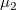
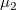
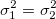

/math-12f3be74f7266e038bdf61eb68a6208c.png "\mu_d\,\!") に等しいかどうかを検定します(例：2つの平均が等しいかどうかを検定するにはその差が0、つまり
に等しいかどうかを検定します(例：2つの平均が等しいかどうかを検定するにはその差が0、つまり/math-590eba6400c9e4df07e0c234f91e4460.png "\mu_1-\mu_2=\mu_d=0\,\!") であるかどうかを検定します)。そして、仮説は次の形式をとります。
であるかどうかを検定します)。そして、仮説は次の形式をとります。
2群の t検定はスチューデントのt統計量と関連する確率を計算し、2つの標本の平均の差がに等しいかどうかを検定します(例：2つの平均が等しいかどうかを検定するにはその差が0、つまりであるかどうかを検定します)。そして、仮説は次の形式をとります。
/math-f67a81ef315f0c59070ef53cb50b3932.png "H_0:\mu_1-\mu_2=\mu_d\,\!") Vs 両側
Vs 両側
Vs 上側
/math-8d8812a65564ffde40d299d450d3de7f.png "H_0:\mu_1-\mu_2 \ge \mu_d") Vs
Vs /math-9a968e5033dd7110b7973529fa35c85d.png "H_1:\mu_1-\mu_2 < \mu_d") 下側
下側
標本サイズが/math-d60f5062564e1ece65993038b62484fa.png "x_1\,\!") と
と/math-9defdb27049cde0b5bdfd4e762a02d6b.png "x_2\,\!") 、平均が
、平均が/math-8d88a43872d6db6535d8672a15f09ce2.png "n_1\,\!") と
と/math-2f6fac59fce80e76d698bcf5ea77bab6.png "n_2\,\!") 、分散が
、分散が/math-4ed789d5f6cd3fea302e306da621cb83.png "\mu_1\,\!") とである2つの独立した標本
とである2つの独立した標本/math-0c153418ac24896b413d1c3c8ad3e95c.png "\sigma_1^2\,\!") とが、2つの正規分布する母集団からそれぞれ得られたものだとすると、下記の式で表すことができます。
とが、2つの正規分布する母集団からそれぞれ得られたものだとすると、下記の式で表すことができます。
, ,
/math-06931d63b90e0e6a6d7d81d64e149e48.png "s_1^2=\frac{1}{n_1-1}\sum_{j=1}^{n_1}{(x_{1j}-\bar{x}_1)^2}") ,
,
ここで、/math-875d0b783f9b167155a8f54a2c3f9e6a.png "\bar{x}_1\,\!") とは標本平均で、
とは標本平均で、/math-f963d3c66aa9a89e64a6db3d0dd63351.png "s_1^2\,\!") と
と/math-8a65733320d52c6da4efeeb5888dba00.png "s_2^2\,\!") は標本分散です。そして、t 検定統計量を次の式で計算します。
は標本分散です。そして、t 検定統計量を次の式で計算します。
ここでは、等しい分散であると仮定され、それはになります。
検定の統計量tは次のようになります。
/math-8992dd1682d9d05a300c39478ada35f5.png "t=\frac{(\bar{x}_1-\bar{x}_2)-\mu_d}{s_p\sqrt{(1/n_1+1/n_2)}}")
これは自由度 /math-6350a1d09d381cb5b9c2420a49cec064.png "(v = n_1+n_2-2)") を持つt 分布であり、
を持つt 分布であり、
/math-49682ab10edeb0f5ed248d7195b85d78.png "s_p=\sqrt{\frac{(n_1-1)s_1^2+(n_2-1)s_2^2}{n_1+n_2-2}}")
は、2つの標本のプール分散です。
等しい分散ではないと見なされる場合
通常の2標本の t統計量はt分布ではないので、近似した検定の統計量t'が使われます。
/math-2f3931fdb28db4a39f9b7140cc965c81.png "t'=\frac{(\bar{x}_1-\bar{x}_2)-\mu_d}{\sqrt{\frac{s_1^2}{n_1}+\frac{s_2^2}{n_2}}}")
そして、自由度vを持つt分布が、t’の分布の近似に使われます。
/math-fdd079fbba82fc1bb066171f062bab57.png "v=\frac{(s_1^2/n_1+s_2^2/n_2)^2}{\frac{(s_1^2/n_1)^2}{n_1-1}+\frac{(s_2^2/n_2)^2}{n_2-1}}")
限界値を持つtの値を比較し、次の場合、帰無仮説/math-806277203dedea2ed8321f6cbd465a54.png "H_0\,\!") を棄却します。
を棄却します。
両側検定： /math-dc78eff8d710d926c9d712cebdb408d0.png "|t| > t_{\sigma/2}\,\!") ;
;
上側検定： /math-b3c71dc9421063ffaf6de1641540a5d5.png "t > t_\sigma\,\!") ;
;
下側検定： /math-b3c0361ff553afb248a469861134f399.png "t < -t_\sigma\,\!") ;
;
p 値もユーザ指定の有意水準, /math-3ac6004d77c0cc0055e95c99b9dfd7e0.png "\sigma\,\!") と比較され、その値は通常0.05が使われます。帰無仮説は、の場合棄却されます。
と比較され、その値は通常0.05が使われます。帰無仮説は、の場合棄却されます。
上側と下側/math-45828455265148a331fe94e5c5175f93.png "(1-\sigma )\times 100\%") の平均の相違に対する信頼水準
の平均の相違に対する信頼水準/math-32a17f0051e09406b2f689fa5f0bb2c5.png "(\mu_1 - \mu_2)\,\!") は次のように計算されます。
は次のように計算されます。
等しい分散であると見なされる場合
| 帰無仮説 | 信頼区間 |
|---|---|
|
|
|
|
|
等しい分散ではないと見なされる場合
| 帰無仮説 | 信頼区間 |
|---|---|
|
|
![\left[(\bar{x}_1-\bar{x}_2)- t_{\alpha/2}\sqrt{\frac{s_1^2}{n_1}+\frac{s_2^2}{n_2}}, (\bar{x}_1-\bar{x}_2)+ t_{\alpha/2}\sqrt{\frac{s_1^2}{n_1}+\frac{s_2^2}{n_2}}\right]](../images/Algorithm_(TwoSampletTest)/math-1dc3a8412c3e70c868d0def30834cdfd.png "\left[(\bar{x}_1-\bar{x}_2)- t_{\alpha/2}\sqrt{\frac{s_1^2}{n_1}+\frac{s_2^2}{n_2}}, (\bar{x}_1-\bar{x}_2)+ t_{\alpha/2}\sqrt{\frac{s_1^2}{n_1}+\frac{s_2^2}{n_2}}\right]")
|
|
|
![\left[-\infty, (\bar{x}_1-\bar{x}_2)+ t_{\alpha}\sqrt{\frac{s_1^2}{n_1}+\frac{s_2^2}{n_2}}\right]](../images/Algorithm_(TwoSampletTest)/math-39eb7689ff8eaf4fc97f74a82869d201.png "\left[-\infty, (\bar{x}_1-\bar{x}_2)+ t_{\alpha}\sqrt{\frac{s_1^2}{n_1}+\frac{s_2^2}{n_2}}\right]")
|
ここで、/math-f1004b741c7a8310ad2a3b7c0d726855.png "t_{\sigma/2}\,\!") は自由度vを持つt-分布の限界値です。
は自由度vを持つt-分布の限界値です。
2群の t検定の検出力は、その感度の測定です。検出力の計算に関する詳細なアルゴリズムについては、検出力とサンプルサイズヘルプをご覧下さい。
2群のt検定の計算は、NAG関数nag_2_sample_t_test (g07cac)を使っています。アルゴリズムについての詳細は、対応するNAG文書を参照して下さい。